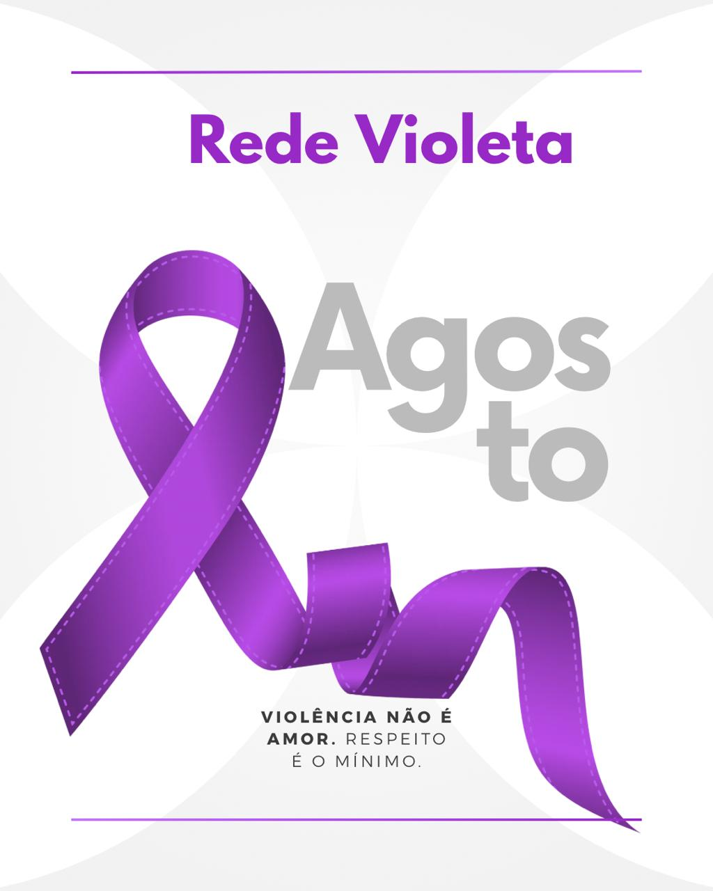

💜
Violeta IA
Escuta acolhedora e informação; não substitui terapia
Você pode mudar essa opção depois.
Ajuste a página do seu jeito. As preferências ficam salvas neste navegador.

Rede Violeta — Juntas contra a violência
Um espaço seguro para desabafar, aprender e denunciar o assédio.
A Rede Violeta é um projeto acadêmico criado para informar, acolher e apresentar caminhos de apoio para mulheres que estejam passando por situações de violência.
Escuta acolhedora e informação; não substitui terapia
Este formulário envia o texto ao servidor do projeto e o salva no banco de dados. Não inclua nomes ou detalhes que identifiquem você ou outras pessoas. Em dispositivo monitorado, prefira não usar este formulário.
Algumas formas de cuidar de você neste momento:
O Agosto Lilás é um movimento nacional de conscientização contra a violência doméstica e sexual. Instituído em agosto — mês da Lei Maria da Penha (Lei nº 11.340/2006, sancionada em 07/08/2006) — o movimento usa o roxo/lilás como símbolo de resistência e esperança.
No Brasil, 1 mulher é vítima de violência a cada 6 minutos. Falar sobre isso é o primeiro passo para mudar.
Conhecer casos históricos ajuda a compreender a importância da prevenção, da informação e da rede de proteção.
A socialite mineira foi assassinada pelo então namorado. O julgamento provocou grande debate social sobre a culpabilização da vítima e impulsionou discussões importantes sobre a violência contra mulheres.
A atriz e bailarina foi assassinada em 1992. O caso provocou grande mobilização social e a participação de sua mãe, Gloria Perez, em mudanças na legislação penal.
Aos 15 anos, Eloá foi mantida em cárcere privado pelo ex-namorado em Santo André, SP. O caso teve grande repercussão nacional e o agressor foi condenado a 98 anos e 8 meses.
Eliza desapareceu em 2010. O caso envolveu o então goleiro Bruno Fernandes e teve grande repercussão nacional, evidenciando a importância de redes de proteção.
A advogada foi assassinada em 2010. O caso foi julgado pelo Tribunal do Júri de Guarulhos — primeiro julgamento televisionado ao vivo no Brasil. O agressor foi condenado a 22 anos e 8 meses.
Importante: os casos apresentados são fatos históricos utilizados exclusivamente para fins educativos e de conscientização.
Assédio é qualquer comportamento indesejado que cause constrangimento, humilhação, intimidação ou sofrimento. Pode ser físico, verbal, virtual ou psicológico.
Exposição repetida a situações humilhantes ou constrangedoras no ambiente de trabalho.
Conduta de natureza sexual não desejada, que constranja ou cause desconforto.
Perseguição, humilhação ou ameaças realizadas por meios digitais.
Comportamentos controladores e abusivos dentro de relações familiares ou afetivas.
Comportamento agressivo e repetitivo contra estudantes em ambiente escolar.
Se você está passando por assédio, pode notar alguns desses efeitos:
Controle, ameaça, humilhação, perseguição, violência sexual e retenção de documentos também merecem atenção. Você não precisa ter certeza sobre o nome para pedir orientação.
Vigilância, isolamento e controle não são demonstrações de afeto. Relações devem respeitar autonomia e consentimento.
Você pode buscar orientação, atendimento de saúde e proteção. O Ligue 180 informa sobre serviços; em perigo imediato, ligue 190.
Escute sem julgar, acredite no relato, não pressione decisões e pergunte como ajudar. Não confronte a pessoa agressora sem consentimento e avaliação de segurança.
Conteúdo educativo geral; não substitui orientação jurídica, policial ou de saúde individual.
Eventos históricos relevantes para a legislação de proteção à mulher.
O mapa pode exibir dados de exemplo ou informações desatualizadas. Confirme endereço e funcionamento com canais oficiais antes de se deslocar.
Informe uma cidade e escolha um serviço. A busca será aberta em um mapa externo; o local não é enviado à Rede Violeta.
Responda as perguntas abaixo com sinceridade. O resultado é apenas orientativo e não substitui apoio profissional.
1. Alguém faz comentários, piadas ou gestos de conteúdo sexual ou íntimo sem sua permissão?
2. Você sente medo ou ansiedade quando vai ao trabalho, escola ou se relaciona com alguém específico?
3. Alguém te pressiona, chantageia ou ameaça para obter algum favor, presença ou contato?
4. Você recebe mensagens, ligações ou contatos insistentes mesmo depois de pedir que parem?
5. Alguém te humilha, grita, te diminui ou critica na frente de outras pessoas?
6. Você evita certos lugares, situações ou pessoas por se sentir insegura/o?
7. Alguém controla o que você faz, com quem fala, onde vai ou como se veste?
8. Você se culpa por situações em que foi tratada/o de forma desrespeitosa?
Toque em uma opção para ligar agora.
Acesse os sites oficiais para encontrar atendimento perto de você.
Organize opções que façam sentido para você. Os campos e marcações ficam apenas nesta página: não são salvos nem enviados. Evite preencher se alguém puder monitorar sua tela.
Assédio é um comportamento repetido e indesejado de natureza sexual, moral ou psicológica. Violência pode ser um único ato físico, sexual, psicológico, patrimonial ou moral. Ambos são crimes — a diferença está na forma e na frequência, mas os dois merecem denúncia.
Sim. O Disque 100 e o Disque 180 aceitam denúncias anônimas. A identidade não é necessária para que a denúncia seja investigada.
Não para o Boletim de Ocorrência. Você pode registrar sozinha/o na delegacia ou online. Para processos judiciais é recomendado, mas a Defensoria Pública oferece assistência jurídica gratuita para quem não tem condições de contratar advogado particular.
Não. O STJ e o STF entendem que a Lei Maria da Penha protege mulheres trans e travestis, pois o critério é gênero feminino, não biológico. Homens cisgêneros podem recorrer ao Código Penal e à Lei nº 13.772/2018 em casos de violência doméstica.
1. A delegacia abre um Inquérito Policial.
2. O Ministério Público recebe o inquérito e pode oferecer denúncia criminal.
3. Você pode solicitar Medidas Protetivas de Urgência (afastamento do agressor, por exemplo).
4. O juiz decide sobre as medidas em até 48h.
5. O processo segue para julgamento.
Em crimes de ação penal pública (como os previstos na Lei Maria da Penha), a denúncia não pode ser retirada pela vítima após o processo iniciado — cabe ao Estado prosseguir. Isso protege a vítima de pressões do agressor. A retratação só é possível antes do recebimento da denúncia pelo juiz, mediante audiência.
Guarde prints de mensagens, e-mails, registros de chamadas. Anote datas, horários e o que foi dito. Identifique testemunhas. Registre ocorrência no RH com protocolo. Em seguida, procure a Delegacia do Trabalho (MTE) ou ajuíze ação na Justiça do Trabalho. O assédio moral é ilícito civil (art. 186 CC) e pode resultar em demissão por justa causa do agressor.
É uma determinação judicial que pode: proibir o agressor de se aproximar da vítima; proibi-lo de contato por qualquer meio; retirá-lo do lar; suspender porte de arma. É solicitada ao registrar o B.O. e decidida pelo juiz em até 48 horas. Descumprir medida protetiva é crime com pena de 3 meses a 2 anos de prisão (art. 24-A da Lei Maria da Penha).
Sim. A Lei nº 13.772/2018 criminaliza o registro não autorizado de conteúdo íntimo. A Lei nº 13.718/2018 criou o crime de importunação sexual online. Compartilhamento de fotos íntimas sem consentimento (revenge porn) é crime com pena de 1 a 5 anos. Denuncie também pelo SaferNet.
Dados fictícios para demonstração. Os gráficos abaixo não representam ocorrências reais nem comportamento de pessoas usuárias; não coletamos métricas de navegação para este painel.
Valores ilustrativos, sem relação com registros reais.
Dados fictícios para demonstração; não foram extraídos do FBSP ou do IPEA. Não use estes exemplos como estatística atual ou orientação sobre risco em um endereço específico.
Principal cenário de violência doméstica e psicológica. A vítima convive com o agressor.
Ruas, praças, feiras e pontos de ônibus. Maior incidência nos horários de pico.
Praticado por colegas, superiores ou clientes. Muitas vezes silenciado por medo de demissão.
Metrô, ônibus e terminais. Especialmente intenso nos horários de pico.
Afeta principalmente jovens e adolescentes; pode começar no ambiente virtual.
Redes sociais, aplicativos e grupos de mensagem. Crimes com pena de 1 a 5 anos.
Registre uma situação de risco para alertar outras pessoas. Não inclua dados pessoais de vítimas.
Os cartões abaixo são baseados nos cinco casos históricos apresentados em “Conheça os Casos”. São registros educativos, não alertas atuais nem indicação de risco nos locais citados.
Relatos enviados pela comunidade aparecem identificados como não verificados e não devem ser tratados como fatos confirmados.
Informação, acolhimento e caminhos de apoio
A Rede Violeta é uma plataforma criada para facilitar o acesso a informações sobre violência contra a mulher e ajudar pessoas a encontrarem caminhos de orientação e apoio de forma simples, discreta e acolhedora.
Nem sempre é fácil reconhecer uma situação de violência ou saber a quem recorrer. A Rede Violeta busca tornar essas informações mais acessíveis, reunindo conteúdos e recursos importantes em um único espaço.
Nosso objetivo é informar sem julgar, orientar sem pressionar e respeitar o tempo e as escolhas de cada pessoa.
Na Rede Violeta, você encontra informações para compreender diferentes situações e conhecer possibilidades de apoio.
A plataforma oferece:
A Violeta foi criada para tornar a busca por informações mais simples e acolhedora. Por meio dela, é possível encontrar conteúdos sobre sinais de violência, canais de atendimento, segurança e outras informações disponíveis na plataforma.
A assistente tem caráter informativo e não substitui profissionais especializados.
Sabemos que buscar informações sobre violência pode exigir cuidado e discrição.
A Rede Violeta oferece recursos como modo discreto, saída rápida e plano de segurança para apoiar uma navegação mais cuidadosa.
Cada situação é diferente. Buscar informação já pode ser um primeiro passo para compreender o que está acontecendo e conhecer as possibilidades disponíveis.
A Rede Violeta está aqui para ajudar você a encontrar informações e caminhos de apoio, respeitando sempre suas decisões.
A Rede Violeta é uma plataforma informativa e de orientação. Ela não substitui atendimento policial, médico, psicológico, jurídico ou outros serviços profissionais.
Em uma situação de emergência ou risco imediato, ligue 190.
Para informações, orientações e encaminhamentos relacionados à violência contra a mulher, procure também os canais oficiais disponíveis na plataforma.
Rede Violeta — Informação que acolhe. Apoio que aproxima.
Assistente da Rede Violeta · Online 💜